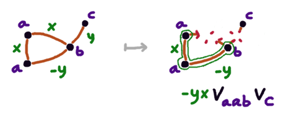

A Graph Polynomial, Sort of
Sridhar posted on twitter about how he preferred understanding the
underlying idea of the chromatic polynomial of a graph as a "all
at once" phenomenon, rather than focusing on the (nonetheless
true, and useful for concrete computations) incremental
deletion-contraction property.
On top of me generally agreeing with the sentiment, it got me wondering
whether one particular generalization of the definition was useful for
anything.
Suppose you have a ring $R$, a set $M$ with an associative commutative
operation $\cdot$ (written as juxtaposition) and some function
$v : M \to R$, not necessarily a homomorphism.
Let $G$ be a graph equipped with functions $m : V \to M$
and $r : E \to R$. That is, vertices are decorated with $M$-elements
(in the diagram example $\{a, b, c, \ldots\}$)
and edges are decorated ith $R$-elements
(in the example $\{x, y, \ldots\}$).

The decoration on each edge is the coefficient to be
used when the edge is contracted.
Given a subset $S \subseteq E$ of the edges of the graph,
we can define $C(S)$ to be the set of sets of vertices
that are the connected components when we consider only the edges in $S$.
We define the "value" of $G$ to be
\[ \sum_{S \subseteq V} \left(\prod_{e \in S} r(e) \right) \left(\prod_{K \in C(S)} v\left(\prod_{x \in K} m(x)\right)\right)\]
The associativity and commutativity of the operation in $M$
is crucial for the rightmost $\Pi$ to be meaningful
To get the chromatic polynomial of a graph, take $R$ to be the
polynomial ring $\Z[\lambda]$, let $M$ be a singleton $\{\star\}$,
and let $v(\star) = \lambda$. Decorate every vertex of $G$ with
$\star$, and every edge with $-1$; the above formula becomes the
familiar
\[ \sum_{S \subseteq V} (-1)^{|S|} \lambda^{|C(S)|}\]